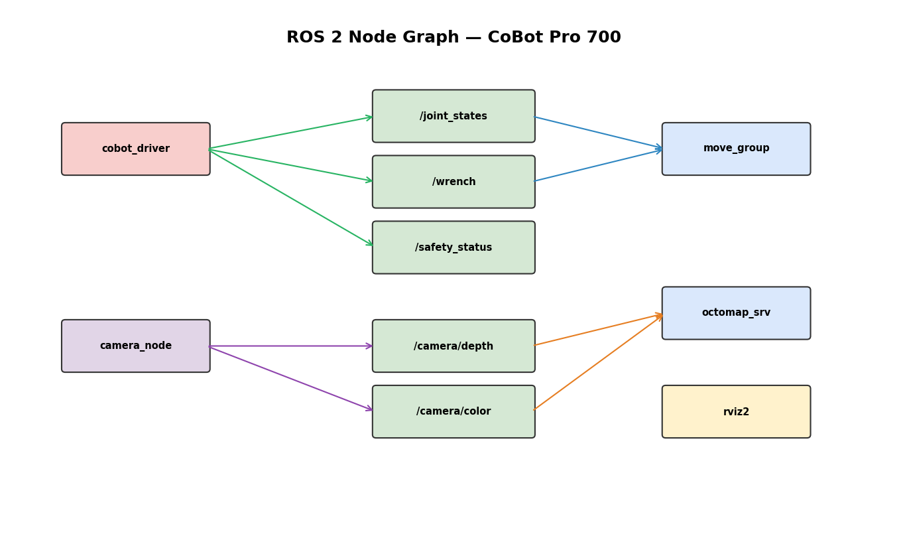
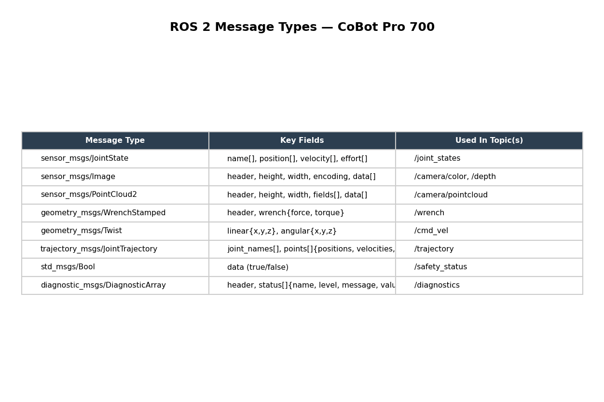
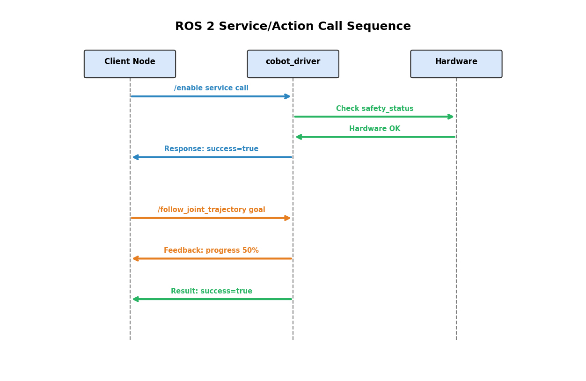

This manual provides the complete ROS 2 API reference for the CoBot Pro 500 and CoBot Pro 700 collaborative robots running CoBot OS v4.2. The CoBot ROS 2 Bridge exposes robot state, sensor data, and control interfaces as standard ROS 2 topics, services, and actions, enabling integration with the broader ROS 2 ecosystem including MoveIt 2, Nav2, and custom application nodes. For initial ROS 2 bridge setup and network configuration, refer to the ROS 2 Integration Guide in the Support documentation. For ROS 2 as a market-facing feature, see the Product Overview from Contoso Robotics Marketing.

The CoBot ROS 2 Bridge consists of three managed lifecycle nodes (per the ROS 2 lifecycle_msgs interface), all running within a single component container for zero-copy intra-process communication:
cobot_driver — Primary node that bridges EtherCAT joint data to ROS 2. Publishes joint states, subscribes to trajectory commands, and hosts control services.cobot_vision — Vision perception node that publishes camera images, depth maps, point clouds, and detected object poses from the CoBot Vision Module VM-200.cobot_safety — Safety status relay node that publishes Safety Controller SC-100 state, active safety functions, and I/O status.All nodes use the Cyclone DDS middleware with shared-memory transport for local communication (< 15 µs latency) and UDP multicast for remote subscribers. QoS profiles are configured per topic as described in each section below.
| Topic | Message Type | Rate | QoS | Description |
|---|---|---|---|---|
/joint_states |
sensor_msgs/JointState |
1 kHz | Best Effort, Volatile, Depth 1 | Position (rad), velocity (rad/s), and effort (Nm) for all 6 joints. Timestamp from EtherCAT DC clock. |
/joint_temperatures |
sensor_msgs/Temperature |
1 Hz | Reliable, Transient Local, Depth 5 | Motor winding temperature (°C) for each joint. Array of 6 readings. |
| Topic | Message Type | Rate | QoS | Description |
|---|---|---|---|---|
/wrench |
geometry_msgs/WrenchStamped |
1 kHz | Best Effort, Volatile, Depth 1 | 6-axis force/torque from FTS-600 in the sensor frame. Only published when FTS-600 is detected on the EtherCAT bus. |
| Topic | Message Type | Rate | QoS | Description |
|---|---|---|---|---|
/camera/color/image_raw |
sensor_msgs/Image |
30 Hz | Best Effort, Volatile, Depth 1 | 1280×800 BGR8 image from D455 RGB sensor. |
/camera/depth/image_rect |
sensor_msgs/Image |
30 Hz | Best Effort, Volatile, Depth 1 | 1280×720 16UC1 rectified depth image (millimeters). |
/camera/color/camera_info |
sensor_msgs/CameraInfo |
30 Hz | Reliable, Volatile, Depth 1 | Intrinsic calibration parameters for the RGB camera. |
/camera/depth/points |
sensor_msgs/PointCloud2 |
15 Hz | Best Effort, Volatile, Depth 1 | Organized XYZRGB point cloud, 1280×720 points. |
/cobot_vision/object_poses |
geometry_msgs/PoseArray |
20 Hz | Reliable, Volatile, Depth 5 | 6-DOF poses of detected objects in the robot base frame. |
| Topic | Message Type | Rate | QoS | Description |
|---|---|---|---|---|
/safety_status |
cobot_msgs/SafetyStatus |
100 Hz | Reliable, Transient Local, Depth 10 | SC-100 state (MONITORING, SS1, SS2, STO, FAULT), active safety functions (SLS, SSM, SOS), and E-Stop status. |

| Topic | Message Type | Expected Rate | Description |
|---|---|---|---|
/cmd_vel |
geometry_msgs/Twist |
≤ 100 Hz | Cartesian velocity command for TCP jogging. Velocities are clamped to the active SLS limit. Timeout: 200 ms (robot stops if no new message received). |
/joint_trajectory_controller/joint_trajectory |
trajectory_msgs/JointTrajectory |
Aperiodic | Multi-waypoint joint trajectory with time-from-start stamps. Used by MoveIt 2 and custom planners. Maximum 200 waypoints per message. |

| Service | Type | Description |
|---|---|---|
/cobot/enable |
std_srvs/Trigger |
Enable motor drives. Requires SC-100 to be in MONITORING state with no active safety stops. Returns success=false if safety preconditions are not met. |
/cobot/disable |
std_srvs/Trigger |
Disable motor drives (controlled stop, then STO). Always succeeds. |
/cobot/zero_ft_sensor |
std_srvs/Trigger |
Zero (tare) the FTS-600 sensor. Robot must be stationary. Samples 1000 readings and sets the current mean as the new zero offset. |
/cobot/get_robot_info |
cobot_msgs/GetRobotInfo |
Returns model name, serial number, firmware version, joint count, and safety controller firmware version. |
/cobot/set_speed_override |
cobot_msgs/SetSpeedOverride |
Set global speed scaling factor (0.0–1.0). Applied to all trajectory execution. Default: 1.0 (100% speed). |
/cobot/get_digital_io |
cobot_msgs/GetDigitalIO |
Read current state of all digital inputs (16) and outputs (16) from the I/O expansion module. |
/cobot/set_digital_io |
cobot_msgs/SetDigitalIO |
Set a specific digital output pin (0–15) to HIGH or LOW. Returns success=false if the pin is configured as safety I/O. |
| Action | Type | Description |
|---|---|---|
/cobot/follow_joint_trajectory |
control_msgs/FollowJointTrajectory |
Execute a multi-waypoint joint trajectory with real-time feedback. Supports goal tolerance (per-joint position: ±0.01 rad default, time: ±0.5 s). Feedback at 100 Hz: actual joint positions, velocities, errors. Result: error code per joint if tolerance violated. |
/cobot/pick_place |
cobot_msgs/PickPlace |
High-level pick-and-place action. Accepts pick pose, place pose, approach/retreat vectors, gripper commands. Internally decomposes into a sequence of FollowJointTrajectory goals with IK solving. Feedback: current phase (APPROACH, GRASP, LIFT, MOVE, PLACE, RETREAT) and progress (0.0–1.0). |
The CoBot ROS 2 Bridge publishes the following TF2 transforms at 1 kHz (joint frames) and 30 Hz (camera frames):
world
└── base_link (robot base, static)
├── joint_1_link (revolute, from /joint_states)
│ └── joint_2_link
│ └── joint_3_link
│ └── joint_4_link
│ └── joint_5_link
│ └── joint_6_link
│ └── tool0 (flange center)
│ ├── ft_sensor (FTS-600 frame, static offset)
│ │ └── tool_tcp (user-defined TCP)
│ └── camera_link (VM-200 mount, static)
│ ├── camera_color_optical_frame
│ └── camera_depth_optical_frame
└── safety_zone_origin (static, configurable)
Static transforms (base_link ↔ world, tool0 ↔ ft_sensor, tool0 ↔ camera_link) are published by a static_transform_publisher loaded from the robot URDF. Dynamic joint transforms are computed from the joint state encoder data at the EtherCAT cycle rate.
The CoBot ROS 2 Bridge provides the following launch files in the cobot_bringup package:
| Launch File | Description |
|---|---|
cobot_bringup.launch.py |
Full system bringup: loads URDF, starts cobot_driver, cobot_safety, joint state publisher, and robot state publisher. Accepts arguments: robot_model (pro500/pro700), ip_address, cycle_time_ms. |
cobot_vision.launch.py |
Starts the cobot_vision node with camera drivers. Arguments: camera_type (realsense/basler), enable_detection (true/false), detection_model (path to TensorRT engine). |
cobot_moveit.launch.py |
Launches MoveIt 2 with CoBot Pro SRDF, OMPL planners, and the FollowJointTrajectory action interface. Includes RViz 2 visualization. |
cobot_all.launch.py |
Convenience launch file that includes all of the above with sensible defaults. |
The cobot_msgs package defines the following custom message and service types:
cobot_msgs/msg/SafetyStatus — uint8 state, bool[] active_functions, bool estop_pressed, uint16 fault_codecobot_msgs/msg/RobotInfo — string model, string serial, string firmware_version, uint8 joint_count, string safety_firmware_versioncobot_msgs/srv/GetRobotInfo — empty request → RobotInfo responsecobot_msgs/srv/SetSpeedOverride — float64 speed_override → bool success, string messagecobot_msgs/srv/GetDigitalIO — empty request → bool[16] inputs, bool[16] outputscobot_msgs/srv/SetDigitalIO — uint8 pin, bool value → bool success, string messagecobot_msgs/action/PickPlace — PoseStamped pick_pose, PoseStamped place_pose, Vector3 approach, Vector3 retreat, string gripper_action → feedback: string phase, float32 progress → result: bool success, string messageDocument version 4.2.0 | Last updated: 2025-01-16 | Contoso Robotics Engineering — Software Team